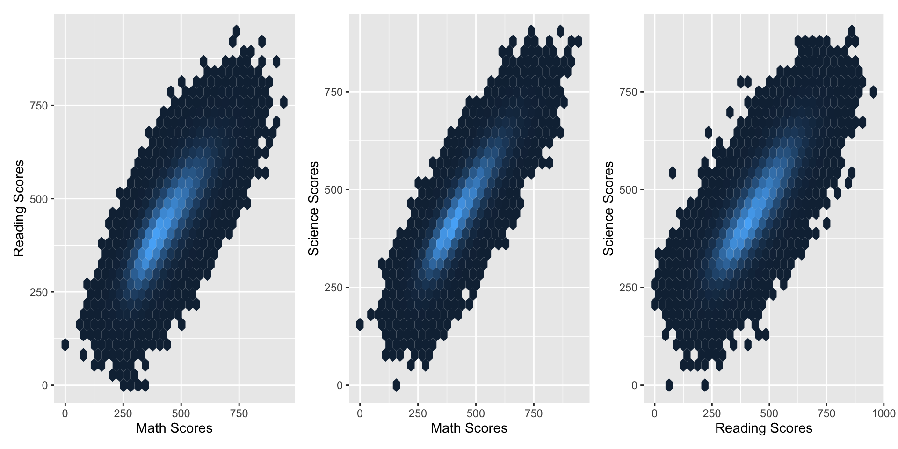

Learningtower: Comparative Analysis of PISA 2022 and Historical Data
Contributors
Dianne Cook
Kevin Wang
Priya Dingorkar
Shabarish Sai Subramanian
Gwan Ru Chen
Introduction
The learningtower R package is designed to streamline the analysis of OECD’s Programme for International Student Assessment (PISA) data. This package provides access to datasets from 2000 to 2022, allowing researchers to explore trends in education, student performance, and other contextual factors. It simplifies the process of handling large, complex datasets, making it easier to conduct comparative studies across countries and years. Currently, we are updating the 2022 version of the learningtower package to ensure compatibility with the latest PISA data and functionalities.
Collection of Data
PISA data is collected every three years from over 70 countries, targeting 15-year-old students. The assessment measures students’ abilities in reading, mathematics, and science through standardized tests. In addition to the tests, questionnaires are administered to students, teachers, and school principals to gather contextual data on educational environments, socio-economic status, and more. This comprehensive approach helps provide insights into factors that affect student performance across different educational systems worldwide.
The student dataset includes the following columns: year, country, school_id, student_id, mother_educ, father_educ, gender, computer, internet, math, read, science, stu_wgt, desk, room, dishwasher, television, computer_n, laptop_n, car, book, wealth, escs, and curiosity. These columns provide comprehensive details about the students’ background, academic performance, and access to resources, offering a robust dataset for analysis of educational outcomes and socio-economic factors.
Gender Gap Analysis: Maths
Explanation of Gender Gap: Math Scores
With the gender difference in average maths scores (measured as girls’ scores - boys’ scores) on the x-axis, this graphic displays the gender gap analysis in mathematics across several nations. The y-axis lists the countries, and the lines indicate confidence intervals, and each point displays the average score difference. Grey points indicate no discernible gender difference, red points emphasise nations where girls outperform boys, and blue points indicate nations where boys exceed girls. The graph illustrates the different degrees of gender inequality in maths ability, with boys outperforming girls in many nations and the opposite tendency in a small number.
Gender Gap Analysis: Reading Scores
Explanation of Gender Gap: Reading Scores
An analysis of the gender gap in reading scores across several nations is shown in this graph. The gender gap in average reading scores is shown by the x-axis, which is computed as (Girls’ scores - Boys’ scores). The lines display the bootstrap confidence intervals, and the y-axis lists the nations. Each point on the y-axis reflects the average gender gap in reading performance. The red dots and lines illustrate that, in the majority of countries, girls perform significantly better than boys in reading, with scores veering towards positive values. The global pattern where girls tend to score higher on reading examinations is highlighted by the vertical zero line, which indicates no difference, and the fact that few countries display boys outperforming girls in reading.
Gender Gap Analysis : Science
Explanation of Gender Analysis: Science Scores
This graph presents a Gender Gap Analysis in Science Scores across various countries, showing the difference between girls’ and boys’ average science scores. The x-axis represents the gender difference, calculated as (Girls’ scores - Boys’ scores), while the y-axis lists the countries. The red points and lines indicate that girls outperform boys in science in several countries, while blue points and lines indicate that boys outperform girls. Grey points and lines represent countries where there is no significant gender difference. The vertical line at zero shows no difference, making it easy to see that in most countries, girls tend to perform better than boys in science, as shown by the positive values on the right side of the chart.
EcoSocio Factors

Breakdown of the Plots
The first plot (left) contrasts reading scores (Y-axis) with math scores (X-axis). Students with higher arithmetic scores also typically have higher reading scores, as evidenced by the data points’ highest concentration near the centre of both axes.
The second plot (middle) contrasts the science scores (Y-axis) with the math scores (X-axis). A link between math and science results is suggested by the distribution’s high density around the centre of both axes, which indicates that students who do well in math also do well in science.
The third plot (right) contrasts the science scores (Y-axis) with the reading scores (X-axis). The hexbin illustrates, like the previous graphs, that kids who score higher on reading assessments typically do better in science, with most data points concentrated in the middle.